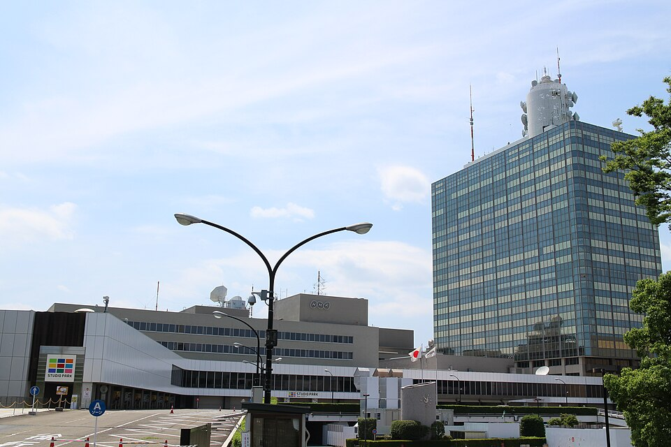
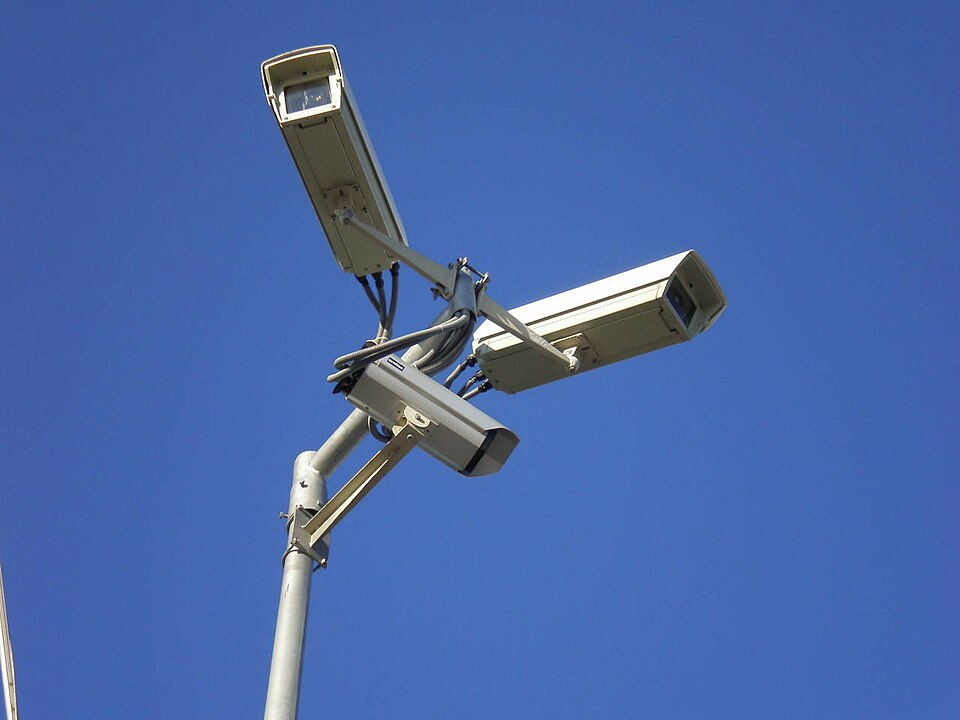
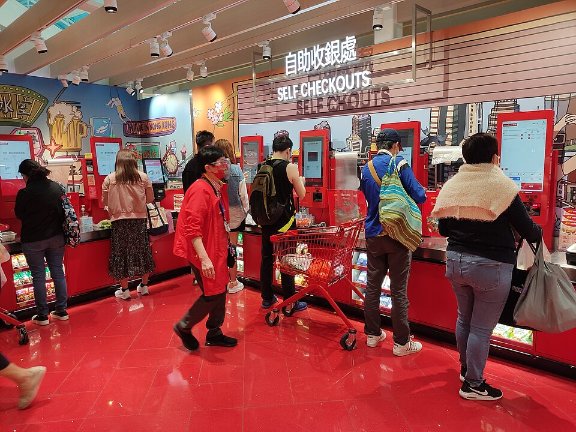
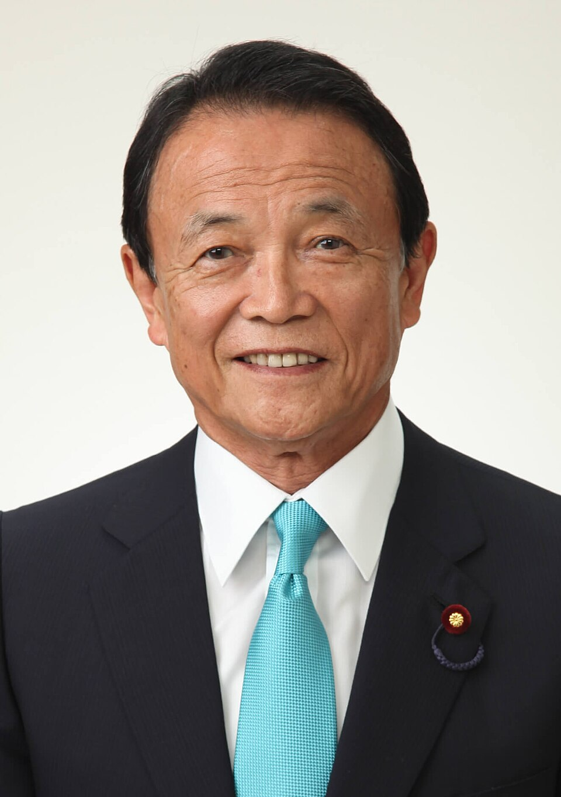

長
長門正貢
ながと・まさつぐ
日本郵政社長
役割：グループ統治とNHK抗議を主導
その後：2019年12月27日に辞任表明7
2017年以前〜2026年11月15日
郵便局員が高齢者を中心に既契約を解約・減額させて新契約へ乗り換えさせ、保険料の二重払い、無保険期間、加入拒否。保障縮小などの不利益を生じさせた。1
背景には、保有契約数の反転や営業成績を重視する評価・手当制度、かんぽ生命・日本郵便・日本郵政間の情報伝達不全。問題の矮小化があった。2
金融庁は2019年12月27日、かんぽ生命と日本郵便に2020年1～3月の業務停止命令、日本郵政を含む3社に業務改善命令を出した。2

問題の前史は2017年以前にさかのぼる。かんぽ生命では貯蓄性商品の販売が難しくなるなか、保有契約数の反転・成長を営業上の重要目標に据え、契約の継続率や保有率を評価・手当に組み込む募集品質向上に向けた総合対策を進めていた。しかし募集現場では、顧客の真の意向よりも新契約の獲得や営業成績が優先される余地が残った。特別調査委員会は営業目標、評価制度、手当制度、組織風土、コンプライアンス態勢。3社間の関係性など複数の要因が重なったとした。12
２．態勢上の問題 かんぽ生命及び日本郵便において、不適正な募集行為が広がった背景には、３社において、それぞれ以下のような態勢上の問題があったと認められた。 （１）かんぽ生命 ① 過度な営業推進態勢 営業目標として乗換契約を含めた新規契約を過度に重視した不適正な募集行為を助長するおそれがある指標を使用し続けた上に、経営環境の悪化により、営業実績が振るわないことが想定されるにもかかわらず、具体的な実現可能性や合理性を欠いた営業目標を日本郵便とともに設定してきたこと。 ② コンプライアンス・顧客保護の意識を欠いた組織風土 事故判定やその調査において、顧客に不利益が生じている場合であっても、契約者の署名を取得していることをもって顧客の意向に沿ったものと看做し、募集人が自認しない限りは事故とは認定せず、不適正な募集行為を行ったおそれのある募集人に対する適切な対応を行わず、コンプライアンス・顧客保護の意識を欠いた組織風土を助長したこと。
意味：当局は、個々の募集人だけでなく、営業目標と事故認定の仕組み自体が不適正募集を広げたと認定した。 https://www.fsa.go.jp/news/r1/yuusei/20191227.html
2018年4月24日、NHK「クローズアップ現代＋」が郵便局における高齢者への不適正募集を報じた。番組では保険料総額が保険金額を上回る契約、高齢者募集時の家族同席拒否、不適正募集に関する4,000件以上の苦情、短期間での契約解約・新規加入、貯金と保険を混同させる説明。営業目標や上司の圧力などが取り上げられた。翌25日、植平光彦社長と横山邦男社長は全従業員向け声明を出したが、特別調査委員会によれば、両社長は放送内容を一部募集人による把握済みの事案と捉え。総合対策を継続すれば解消できる問題と認識していた。2
しかしながら、日本郵便の取締役会では、適正募集の確保に向けた実質的な議論がなされておらず、その前提として、保険募集に関する不祥事件や苦情の件数は、報告され、把握されているものの、件数以上の事案の具体的内容や被害実態等は報告されていない。経営会議への報告体制も同様であった。 ① 「取締役・監査役が情報を把握しておらず、また、自ら積極的に情報を把握しようとも しなかったことが、本契約問題の原因として挙げられると思う。取締役会では、コンプラ イアンス情報についての報告を受けていたが、報告されるコンプライアンス情報は、専ら 社内の業務上横領や郵便物の破棄隠匿事案であって、不適正募集等の保険契約に関する問 題は、保険業法違反として金融庁への報告を要する不祥事件が年間約20 件存在するという 程度であった。（中略）そのため、私は、今般報道されているような事象が存在するとしても、それほど大きな件数ではないと思っていたし、私以外の役員も同様に認識していたのではないかと思う。（中略）2019 年6 月以降の報道等により全国にわたって大量に存在する可能性があると聞いて大変驚いた。」
意味：経営層が件数の背後にある具体的手口や被害を把握せず、問題を小規模と誤認していた状況を示す。 https://www.japanpost.jp/pressrelease/jpn/20191218_01.pdf
横山社長は80歳以上への販売禁止・販売実績不計上、70歳以上への家族同席必須化など、より強い高齢者募集抑制策を提案した。ところがこの提案は営業推進への影響が大きいとされ、即時の全面実施ではなく素案作成と再協議に送られた。顧客保護を示す提案が出た一方で、営業目標と制度変更に反映されるまで時間を要した。後の報告書は、三社の役割分担を、かんぽ生命をメーカー、日本郵便を販売店。日本郵政をお目付け役とする関係として記録している。21
④ 「今回の保険商品についていえば、かんぽ生命はメーカーであり、日本郵便は販売店であって、日本郵政はいわばお目付け役である。現状は、それぞれ不可侵の関係にあるが、その関係をどう見直すかということもある。それぞれの会社がそれぞれの分野につき専門性を持って対応しているので、他社があまりに介入するのは妥当でないこともあり、それぞれの独立性や自由度は尊重しなければならない。持株会社である日本郵政ができることがあるとすれば、個別のテーマを決めて、それについて監督管理するというようなことではないか。」 ⑤ 「日本郵政グループにおいても、各子会社との間でホットラインなどのコミュニケーションの場を構築する必要はあると思う。ただ、日本郵便の社長ですら現場とコミュニケーションをとりきれない中で、日本郵政が現場に出ていくということがどこまでできるのかという疑問がある。」
意味：三社の役割分担が、相互に踏み込まない「不可侵」の関係として機能していたとの内部意見を示す。 https://www.japanpost.jp/pressrelease/jpn/20191218_01.pdf
2018年7月、NHKが続編制作のため公式Twitter等で情報提供を呼びかけた。日本郵政、日本郵便、かんぽ生命の3社は動画に「詐欺」「押し売り」「元本割れ」などの表現があり。会社全体がブラックカンパニーであるかのような印象を与えるとしてNHK会長宛てに抗議文を送った。2018年9月25日、日本郵政上級副社長の鈴木康雄がNHK経営委員長職務代行者の森下俊三と面会した。その後、NHK経営委員会は上田良一会長を厳重注意した。NHK側は個別番組への介入を否定しつつ、議事録公開の不十分さを後に認めた。34
○長門参考人 お答え申し上げます。 四月二十四日のＮＨＫ「クローズアップ現代＋」第二弾をＮＨＫさんが制作されると伺っております。このために、七月の七日と十日でございますけれども、ツイッターでいろいろ情報を集めるという情報が立ち上がりました。これを拝見いたしますと、詐欺、押し売り、元本割れと、非常に刺激的な言葉が並んでおりました。 誠実に全国でいろいろ仕事をしている同僚たちもいます中で、会社全体がブラックカンパニーであるかのような傾向を感じましたので、これは少し不公正なのではないのかな、一方的な情報ではないかと思いましたので、会社全体で、グループ全体で協議いたしまして、郵政、郵便、かんぽ三社長連名でＮＨＫの会長に文書を送って抗議申し上げたということがまず冒頭でございます。
意味：日本郵政側がNHK報道を「刺激的」「一方的」と受け止め、三社長名で抗議した経緯を本人が説明している。 https://www.shugiin.go.jp/internet/itdb_kaigiroku.nsf/html/kaigiroku/009420020191119003.htm
2018年11月以降、金融庁はかんぽ生命に乗換契約の分析を求めた。2019年2月下旬には金融庁参事官室から顧客本位の観点で実態把握が必要との指摘があった。追加報告書によれば、植平社長は報告徴求を回避したいとの意識を持ちつつ、問題を明らかにして改善するよう関係役員に指示した。しかし現場実態の調査や過去契約への遡及対応は進まず、従来の制度・手続の強化にとどまった。2019年5月27日にはグループコンプライアンス連絡会で報告徴求予定が共有されたが、6月の日本郵政の取締役会・経営会議では詳細な報告と議論がなされなかった。7月23日に初めて詳細報告があり、翌24日に特別調査委員会の設置が決議された。51
不適正募集問題については、第5 編でも述べたように、第一次的には、かんぽ生命及び日本郵便のリスク・コンプライアンス管理態勢の問題であるので、直ちに、不適正募集問題の原因が、持株会社としての日本郵政のガバナンス問題に結びつくものではない。 しかしながら、日本郵政グループが、どのようなガバナンスの機関設計を前提とするにせよ、第5 編で述べたように、事業子会社において、企業価値が毀損される不正の端緒が顕在化しつつある中で、グループ全体の企業価値が毀損されないよう、一体としてこれを防止するために適切に対応することが求められていることは明らかである。 すなわち、日本郵政グループの企業価値が毀損されるおそれのある場合には、持株会社である日本郵政が、日本郵政グループが一体としてこれに対応できるよう適切に指導する役割を果たすことが要請される。 今回の不適正募集事案を受け、種々の改革が進められるとはいえ、今後、同様の不適正募集が発生するリスクは残ると言わざるを得ず、（中略）グループの価値が毀損されるリスクをはらんだ状態が当面は継続するといえる。
意味：報告書は、子会社の募集管理だけでなく、持株会社のグループ統治責任も明確に問題化した。 https://www.japanpost.jp/pressrelease/jpn/20191218_01.pdf
2019年6月、朝日新聞などの報道で、既契約を解約させた後に新契約へ乗り換えさせる不適正な販売が広く報じられた。7月、かんぽ生命と日本郵便は特定事案調査を開始した。7月31日には不利益が生じた可能性のある契約が約18.3万件に拡大し、全契約約3,000万件を調査対象とする方針が示された。調査類型には契約の重複、無保険期間、契約消滅と新契約の反復、多額契約、被保険者変更、保険種類変更。短期解約後の再契約などが含まれた。追加報告書では、顧客聴取で状況と意向を確認できた6万8,020件のうち6,327件が意向に沿わない募集だったとされた。62
・ 顧客の意向に沿わず、既契約の保険期間が短縮され、短縮されてから短期間のうちに、新契約が締結されている類型 （３）更に、実際には、節税効果が見込めない保険商品であるにも関わらず、社内研修資料において、募集人に対し、相続税対策として顧客に説明・販売することを慫慂しているなど、不適正な募集行為を助長しかねない実態が認められた。 （４）なお、無効・合意解除（苦情を受けて解約・返金をしたもの）、未入金解除（初回保険料未払で解除）、１Ｐ失効・解約（初回保険料支払後に解除）、撤回（クーリングオフ）となっている契約が多数認められたが、これらの中には結果的に顧客に不利益が生じていない、または僅少ではあるものの、不適正な募集行為により、顧客の意向に沿わない契約が締結されていたものが含まれているおそれがある。
意味：行政処分が、単なる解約手続の問題ではなく、顧客意向に反する契約勧誘や誤った相続税対策の説明まで認定していることを示す。 https://www.fsa.go.jp/news/r1/yuusei/20191227.html
2019年12月18日、外部弁護士3名による特別調査委員会が最終報告書を公表した。報告書は問題を単なる個人の不正ではなく、経営目標、営業推進、募集管理、組織文化。グループ統治の複合的な問題と位置付けた。12月27日、金融庁はかんぽ生命に保険募集・契約締結の業務停止、日本郵便に保険募集の業務停止。日本郵政に業務改善命令を出した。法令違反67件、社内ルール違反662件のほか、顧客の意向に沿わない契約類型などを認定した。同日、長門正貢社長、横山邦男社長。植平光彦社長は辞任を発表した。167
本契約問題発覚以降、日本郵政グループは、不適正募集防止に向け、以下のような改善への取組みを行っており、当委員会としても、顧客に不利益を生じさせる乗換契約その他の不適正募集の防止に向けた自主的取組みとして一定の評価をしている。 顧客に不利益を与える乗換契約、高齢者募集、多数契約募集その他の不適正募集に共通する取組みとして、研修等を通じて企業風土改革による「お客さま本位の営業活動」を徹底すること、コンプライアンス関連部門において募集実態を把握すること、調査の充実等に必要な人員を拡充すること、新契約月額保険料実績に偏重した営業目標を見直すこと等の施策を実施している。 乗換契約における不適正募集の防止のための取組みとして、乗換契約についての勧奨を停止すること、募集事前チェック機能の対象範囲を乗換契約へ拡充すること、新契約 SC の引受手続時において申込契約を全件チェックすること、解約・減額請求時等における「解約時ご留意事項確認書」によるチェックを強化すること等の施策を実施している。
意味：再発防止策が、営業目標偏重と乗換勧誘を直接の改革対象としていることが分かる。 https://www.japanpost.jp/pressrelease/jpn/20191218_01.pdf
2020年3月26日、特別調査委員会の追加報告書が公表された。追加調査ではデジタル・フォレンジック、役員・社員・募集人へのヒアリング、改善策の検証が行われた。2020年には募集人処分を業務廃止・業務停止・厳重注意・注意の四段階へ拡大し、募集状況の録音・保管、顧客意向の再確認。70歳以上への家族同席などを組み込んだ。2023年12月26日、総務省・金融庁は2019年の業務改善命令に基づく定期報告を終了し、通常監督へ移行した。2026年11月15日現在、公開資料上、かんぽ不適正販売そのものについて個々の募集人・経営陣を対象とした刑事有罪判決は確認できない。289
顧客対応は、個別契約の状況と意向を確認し、契約復元や返金などの不利益回復を進める形で継続した。2023年5月末までに多数契約調査で契約復元等が完了した顧客は2,819人で、復元等の希望者2,821人の約99.9％に当たる。もっとも、これは多数契約調査の一類型についての数値であり、全契約調査の対象顧客約1,900万人と同じ母集団ではない。2024年1月からは家族同席などの措置を前提に、70歳以上の顧客への積極的提案を再開する方針が示された。109
表1 上段のとおり、9 月末基準日のデータ（以下「9 月末基準日データ」という。）によれば、2014年4月から2019年3月までの5年間に受理した特定事案に該当する契約に関して、顧客からの聴き取りに基づき、契約時の状況や意向を確認できた6万8,020件のうち、約9.3％に当たる6,327件が、顧客の意向に沿わない募集であったことが判明している。 （中略） 「違反疑い事案」の件数は、2014年4月から2019年3月までの5年間に受理した特定事案に該当する契約について、募集人に対する処分等の対象となった契約のうち、顧客からの聴き取りに基づく調査等の結果、保険業法その他の法令、監督指針又は社内ルール等に違反した疑いがあると判定された契約の件数である。
意味：追加報告書は、顧客聴取で意向を確認できた契約のうち、約1割が意向に沿わない募集だったと記録している。 https://www.post.japanpost.jp/notification/productinformation/2020/0326_01_01.pdf
公表された数値は、調査対象契約、顧客聴取で意向を確認できた契約、違反疑い事案、復元等を希望した顧客など。異なる範囲を示している。約18.3万件は不利益の可能性がある契約として示された数であり、約3,000万件は過去5年分を含む全契約調査の対象である。6万8,020件と6,327件は特定事案について顧客から聴き取りができた契約と、意向に沿わない募集の件数である。2,819人と2,821人は多数契約調査における復元等の完了者と希望者である。これらは調査の時点と対象が異なり、同一の被害件数として合算できない。102
不適正募集問題については、第5 編でも述べたように、第一次的には、かんぽ生命及び日本郵便のリスク・コンプライアンス管理態勢の問題であるので、直ちに、不適正募集問題の原因が、持株会社としての日本郵政のガバナンス問題に結びつくものではない。 しかしながら、日本郵政グループが、どのようなガバナンスの機関設計を前提とするにせよ、第5 編で述べたように、事業子会社において、企業価値が毀損される不正の端緒が顕在化しつつある中で、グループ全体の企業価値が毀損されないよう、一体としてこれを防止するために適切に対応することが求められていることは明らかである。 すなわち、日本郵政グループの企業価値が毀損されるおそれのある場合には、持株会社である日本郵政が、日本郵政グループが一体としてこれに対応できるよう適切に指導する役割を果たすことが要請される。 今回の不適正募集事案を受け、種々の改革が進められるとはいえ、今後、同様の不適正募集が発生するリスクは残ると言わざるを得ず、（中略）グループの価値が毀損されるリスクをはらんだ状態が当面は継続するといえる。
意味：報告書は、子会社の募集管理だけでなく、持株会社のグループ統治責任も明確に問題化した。 https://www.japanpost.jp/pressrelease/jpn/20191218_01.pdf
調査資料は、契約件数、顧客人数、聴き取り件数。復元等の希望者数を別の範囲で示している。各報告の対象と時点を区別して読む必要がある。10




| 日本郵政本社 | 東京都千代田区大手町2-3-1 | グループ統治・記者会見の中心 | 22 |
| かんぽ生命本社 | 東京都千代田区大手町2-3-1 | 商品開発・募集管理の中核 | 23 |
| 日本郵便本社 | 東京都千代田区大手町2-3-1 | 郵便局員による募集の管理主体 | 24 |
| 大手町プレイス カンファレンスセンター | 東京都千代田区大手町2-3-1 | 中間報告・JP改革実行委員会の会場 | 18 |
| NHK放送センター | 東京都渋谷区神南2-2-1 | 「クローズアップ現代＋」制作・経営委員会 | 25 |
| 金融庁 | 東京都千代田区霞が関3-2-1 | 検査・行政処分 | 26 |
| 総務省 | 東京都千代田区霞が関2-1-2 | 日本郵便・NHK所管、行政処分 | 27 |
| 東京地方裁判所 | 東京都千代田区霞が関1-1-4 | NHK議事録開示関連訴訟 | 28 |
乗換契約では、顧客が旧契約と新契約の保険料を重複して支払う期間や、旧契約の保障消滅。新契約の加入拒否・保障不成立が生じ得た。募集人側には新契約件数、手当、表彰。評価が結び付いた。6
ながと・まさつぐ
日本郵政社長
役割：グループ統治とNHK抗議を主導
その後：2019年12月27日に辞任表明7
よこやま・くにお
日本郵便社長
役割：高齢者募集抑制を提案
その後：社長として責任を負い辞任2
うえひら・みつひこ
かんぽ生命社長
役割：募集品質と金融庁報告徴求への対応を指揮
その後：2019年12月に辞任1
すずき・やすお
日本郵政上級副社長
役割：NHK経営委員会側への申入れの窓口
その後：2019年12月に辞任7
いしはら・すすむ
NHK経営委員長
役割：上田会長への厳重注意を行った経営委員会を主導
その後：資料上確認できる範囲では未確認12
もりした・しゅんぞう
NHK経営委員長職務代行者、後に委員長
役割：鈴木康雄と面会し、厳重注意の議論に関与
その後：透明性不足を反省4
うえだ・りょういち
NHK会長
役割：経営委員会から厳重注意を受けた
その後：番組編集への関与をめぐる当事者11
いとう・てつお
特別調査委員会委員長、弁護士
役割：外部調査を統括
その後：調査報告書を公表16
あそう・たろう
財務相・金融担当相
役割：金融庁の一般的対応を説明
その後：2019年7月会見で説明29
ますだ・ひろや
日本郵政社長
役割：JP改革実行委員会を設置
その後：2020年に就任18
せんだ・てつや
かんぽ生命社長
役割：2023年の業務改善状況公表時の社長
その後：2023年報告で説明9
たにがき・くにお
かんぽ生命社長
役割：2023年12月公表時の社長
その後：通常監督への移行時に公表9
すずき・しげき
総務事務次官
役割：行政処分情報漏洩問題の当事者
その後：かんぽ販売への関与は未確認7
たかいち・さなえ
総務相
役割：郵政行政の所管大臣
その後：販売不正への個別関与は未確認3
相関図は、保険商品を管理するかんぽ生命、募集を担う日本郵便、持株会社の日本郵政、顧客、監督機関。NHK報道を分けて示す。線の種類は協力、対立、金銭、上下関係、調査。闇の人脈を表す。
上司と部下・盟友。2018年4月のNHK報道後、両社長名で全従業員向け声明を出した。横山は高齢者募集の抑制を強く提案したが、会社間の制度調整に時間を要した。出典：追加報告書2
上司と部下。2019年5月下旬までに金融庁報告徴求の可能性が長門に報告されたと特別調査委員会は認定した。出典：追加報告書5
上司と部下。両社は同一グループ内で営業目標と顧客保護の調整を担い、2019年12月27日に両者とも辞任を表明した。出典：日本郵政会見7
上司と部下。鈴木は日本郵政上級副社長としてNHKへの抗議・NHK経営委員会との接触に関与した。長門は後に「暴力団」という表現は極めて不適切と述べた。出典：日本郵政会見7
対立・確執。2018年9月25日に面会。郵政側のNHKへの問題提起が、経営委員会による上田会長厳重注意につながった。出典：衆議院資料12
対立・確執。森下が職務代行者として経営委員会の厳重注意の議論に関与。森下は番組編集介入を否定しつつ、議事録公開の不十分さを認めた。出典：国会会議録4
上司と部下・対立。石原が委員長を務める経営委員会が、上田会長を厳重注意した。出典：NHK関連判決11
対立・確執。郵政3社はNHK会長宛てに情報提供動画の削除を申入れ、上田会長側との認識の違いが「ガバナンス」論争に発展した。出典：国会会議録3
監督者と被監督者。金融庁は乗換契約の顧客本位性と実態把握を問題視。植平は関係役員に対応を指示したが、調査は迅速に進まなかった。出典：追加報告書5
資金の出し手と受け手。顧客が保険料を払い、募集人は新契約件数・手当・表彰を得る構造があった。具体的な個人名は公表されていない。出典：特別調査委員会1
資金の出し手と受け手。かんぽ生命が商品を供給し、日本郵便が郵便局ネットワークで募集を担った。両社の関係が統制上の構造問題となった。出典：金融庁6
庇護・口利き。日本郵政は持株会社として傘下2社を統治する立場だったが、金融庁報告徴求の詳細把握が遅れた。出典：特別調査委員会1
官僚と元官僚・情報漏洩。行政処分情報の漏洩問題で双方が辞任に至った。かんぽ販売行為への関与は未確認。出典：日本郵政会見7
対立・確執。長門はNHK動画の表現を一方的・刺激的と批判したが、2019年会見では抗議の手法や「暴力団」表現を問題視した。出典：衆議院会議録3
対立・確執。2020年国会で、経営委員会の注意の透明性不足と個別番組介入への疑念について説明を求められた。出典：衆議院会議録4
○長門参考人 お答え申し上げます。 四月二十四日のＮＨＫ「クローズアップ現代＋」第二弾をＮＨＫさんが制作されると伺っております。このために、七月の七日と十日でございますけれども、ツイッターでいろいろ情報を集めるという情報が立ち上がりました。これを拝見いたしますと、詐欺、押し売り、元本割れと、非常に刺激的な言葉が並んでおりました。 誠実に全国でいろいろ仕事をしている同僚たちもいます中で、会社全体がブラックカンパニーであるかのような傾向を感じましたので、これは少し不公正なのではないのかな、一方的な情報ではないかと思いましたので、会社全体で、グループ全体で協議いたしまして、郵政、郵便、かんぽ三社長連名でＮＨＫの会長に文書を送って抗議申し上げたということがまず冒頭でございます。
意味：日本郵政側がNHK報道を「刺激的」「一方的」と受け止め、三社長名で抗議した経緯を本人が説明している。 https://www.shugiin.go.jp/internet/itdb_kaigiroku.nsf/html/kaigiroku/009420020191119003.htm
公開資料で確認できる中心は、営業組織と行政・報道機関の関係である。暴力団、総会屋、仕手筋、海外口座。政治家の利益受領との直接関係は公的認定を確認できない。
暴力団・反社会的勢力 確認できない
総会屋 確認できない
仕手筋・投資家 確認できない
海外法人・海外口座 確認できない
政治家・政治団体 確認できない
総務省、日本郵政 認定
日本郵政幹部、NHK経営委員 指摘
鈴木康雄、日本郵政、NHK 確認できない
右翼団体・フィクサー 確認できない
○長門参考人 お答え申し上げます。 その後、いろいろやりとり、担当ベースであったんですけれども、正式にＮＨＫ会長の方から、二カ月ほど何の音沙汰もないということでしたので、これではだめだな、しっかりとＮＨＫの対応を伺いたいということで、執行部隊の方はＮＨＫ会長ですけれども、経営監督の方は経営委員であるという理解でございましたので、経営委員会の方にお伺いしようということで、三社長のレターは十月五日、発信させていただきましたけれども、いきなり経営委員会の方にレター出状というのはちょっと失礼かなと思いましたので、鈴木上級副社長が、そういうことをさせていただきたいということを申し入れたのが九月二十五日でございます。 ○森下参考人 お答えいたします。 昨年の九月下旬ですが、日本郵政の鈴木様から、私どもの阪神高速道路の秘書の方に電話をいただきました。お会いしたいというお話でしたので、要件はわからなかったんですが、（中略）九月二十五日の午前中に、阪神高速道路の事務所で二人でお会いをいたしました。鈴木副社長からは、（中略）ＮＨＫのガバナンスがきいていないんじゃないかということで、経営委員会としても対応してほしいというお話がございました。
意味：報道への抗議が、NHK会長への文書から経営委員会への働き掛けへ拡大した場面である。 https://www.shugiin.go.jp/internet/itdb_kaigiroku.nsf/html/kaigiroku/009420020191119003.htm
| 日本郵便募集人 | 1単位未確認 | 0単位未確認 | 新契約件数・営業成績・手当・表彰 | 1 |
| かんぽ生命・日本郵便 | 0金額未確認 | 0金額未確認 | 契約調査・顧客対応・業務停止 | 6 |
| 顧客 | 0金額未確認 | 0金額未確認 | 二重払い・無保険期間・保障縮小の可能性 | 6 |
| 金融庁・総務省 | 0金額未確認 | 0金額未確認 | 検査・行政処分・通常監督 | 6 |
| NHK報道 | 0金額未確認 | 0金額未確認 | 報道をめぐる抗議と議論 | 3 |
| 経営陣 | 0金額未確認 | 0金額未確認 | 辞任・社内処分 | 7 |
刑事有罪判決。公開一次資料では確認できない。6
| 金融庁 | 2019-12-27 | 2020年1月1日～3月31日、保険募集・契約締結停止 |
保険業法132条1項に基づく業務停止・業務改善命令。公表6
| 金融庁 | 2019-12-27 | 2020年1月1日～3月31日、募集停止 |
かんぽ生命商品の募集停止・業務改善命令。公表6
| 金融庁 | 2019-12-27 | グループガバナンス、情報連携、取締役会の監督強化を要求 |
業務改善命令。公表6
| 日本郵政グループ | 2020-07-29 | 厳重注意、報酬減額、業務廃止。業務停止等 |
社内規程違反等。公表19
| NHK経営委員会 | 2018-10-23 | 上田会長を厳重注意 |
かんぽ報道をめぐる手続・編集権の問題。行政処分ではなくNHK内部の措置11
・ 顧客の意向に沿わず、既契約の保険期間が短縮され、短縮されてから短期間のうちに、新契約が締結されている類型 （３）更に、実際には、節税効果が見込めない保険商品であるにも関わらず、社内研修資料において、募集人に対し、相続税対策として顧客に説明・販売することを慫慂しているなど、不適正な募集行為を助長しかねない実態が認められた。 （４）なお、無効・合意解除（苦情を受けて解約・返金をしたもの）、未入金解除（初回保険料未払で解除）、１Ｐ失効・解約（初回保険料支払後に解除）、撤回（クーリングオフ）となっている契約が多数認められたが、これらの中には結果的に顧客に不利益が生じていない、または僅少ではあるものの、不適正な募集行為により、顧客の意向に沿わない契約が締結されていたものが含まれているおそれがある。
意味：行政処分が、単なる解約手続の問題ではなく、顧客意向に反する契約勧誘や誤った相続税対策の説明まで認定していることを示す。 https://www.fsa.go.jp/news/r1/yuusei/20191227.html
２．態勢上の問題 かんぽ生命及び日本郵便において、不適正な募集行為が広がった背景には、３社において、それぞれ以下のような態勢上の問題があったと認められた。 （１）かんぽ生命 ① 過度な営業推進態勢 営業目標として乗換契約を含めた新規契約を過度に重視した不適正な募集行為を助長するおそれがある指標を使用し続けた上に、経営環境の悪化により、営業実績が振るわないことが想定されるにもかかわらず、具体的な実現可能性や合理性を欠いた営業目標を日本郵便とともに設定してきたこと。 ② コンプライアンス・顧客保護の意識を欠いた組織風土 事故判定やその調査において、顧客に不利益が生じている場合であっても、契約者の署名を取得していることをもって顧客の意向に沿ったものと看做し、募集人が自認しない限りは事故とは認定せず、不適正な募集行為を行ったおそれのある募集人に対する適切な対応を行わず、コンプライアンス・顧客保護の意識を欠いた組織風土を助長したこと。
意味：当局は、個々の募集人だけでなく、営業目標と事故認定の仕組み自体が不適正募集を広げたと認定した。 https://www.fsa.go.jp/news/r1/yuusei/20191227.html
しかしながら、日本郵便の取締役会では、適正募集の確保に向けた実質的な議論がなされておらず、その前提として、保険募集に関する不祥事件や苦情の件数は、報告され、把握されているものの、件数以上の事案の具体的内容や被害実態等は報告されていない。経営会議への報告体制も同様であった。 ① 「取締役・監査役が情報を把握しておらず、また、自ら積極的に情報を把握しようとも しなかったことが、本契約問題の原因として挙げられると思う。取締役会では、コンプラ イアンス情報についての報告を受けていたが、報告されるコンプライアンス情報は、専ら 社内の業務上横領や郵便物の破棄隠匿事案であって、不適正募集等の保険契約に関する問 題は、保険業法違反として金融庁への報告を要する不祥事件が年間約20 件存在するという 程度であった。（中略）そのため、私は、今般報道されているような事象が存在するとしても、それほど大きな件数ではないと思っていたし、私以外の役員も同様に認識していたのではないかと思う。（中略）2019 年6 月以降の報道等により全国にわたって大量に存在する可能性があると聞いて大変驚いた。」
意味：経営層が件数の背後にある具体的手口や被害を把握せず、問題を小規模と誤認していた状況を示す。 https://www.japanpost.jp/pressrelease/jpn/20191218_01.pdf
不適正募集問題については、第5 編でも述べたように、第一次的には、かんぽ生命及び日本郵便のリスク・コンプライアンス管理態勢の問題であるので、直ちに、不適正募集問題の原因が、持株会社としての日本郵政のガバナンス問題に結びつくものではない。 しかしながら、日本郵政グループが、どのようなガバナンスの機関設計を前提とするにせよ、第5 編で述べたように、事業子会社において、企業価値が毀損される不正の端緒が顕在化しつつある中で、グループ全体の企業価値が毀損されないよう、一体としてこれを防止するために適切に対応することが求められていることは明らかである。 すなわち、日本郵政グループの企業価値が毀損されるおそれのある場合には、持株会社である日本郵政が、日本郵政グループが一体としてこれに対応できるよう適切に指導する役割を果たすことが要請される。 今回の不適正募集事案を受け、種々の改革が進められるとはいえ、今後、同様の不適正募集が発生するリスクは残ると言わざるを得ず、（中略）グループの価値が毀損されるリスクをはらんだ状態が当面は継続するといえる。
意味：報告書は、子会社の募集管理だけでなく、持株会社のグループ統治責任も明確に問題化した。 https://www.japanpost.jp/pressrelease/jpn/20191218_01.pdf
本契約問題発覚以降、日本郵政グループは、不適正募集防止に向け、以下のような改善への取組みを行っており、当委員会としても、顧客に不利益を生じさせる乗換契約その他の不適正募集の防止に向けた自主的取組みとして一定の評価をしている。 顧客に不利益を与える乗換契約、高齢者募集、多数契約募集その他の不適正募集に共通する取組みとして、研修等を通じて企業風土改革による「お客さま本位の営業活動」を徹底すること、コンプライアンス関連部門において募集実態を把握すること、調査の充実等に必要な人員を拡充すること、新契約月額保険料実績に偏重した営業目標を見直すこと等の施策を実施している。 乗換契約における不適正募集の防止のための取組みとして、乗換契約についての勧奨を停止すること、募集事前チェック機能の対象範囲を乗換契約へ拡充すること、新契約 SC の引受手続時において申込契約を全件チェックすること、解約・減額請求時等における「解約時ご留意事項確認書」によるチェックを強化すること等の施策を実施している。
意味：再発防止策が、営業目標偏重と乗換勧誘を直接の改革対象としていることが分かる。 https://www.japanpost.jp/pressrelease/jpn/20191218_01.pdf
表1 上段のとおり、9 月末基準日のデータ（以下「9 月末基準日データ」という。）によれば、2014年4月から2019年3月までの5年間に受理した特定事案に該当する契約に関して、顧客からの聴き取りに基づき、契約時の状況や意向を確認できた6万8,020件のうち、約9.3％に当たる6,327件が、顧客の意向に沿わない募集であったことが判明している。 （中略） 「違反疑い事案」の件数は、2014年4月から2019年3月までの5年間に受理した特定事案に該当する契約について、募集人に対する処分等の対象となった契約のうち、顧客からの聴き取りに基づく調査等の結果、保険業法その他の法令、監督指針又は社内ルール等に違反した疑いがあると判定された契約の件数である。
意味：追加報告書は、顧客聴取で意向を確認できた契約のうち、約1割が意向に沿わない募集だったと記録している。 https://www.post.japanpost.jp/notification/productinformation/2020/0326_01_01.pdf
○長門参考人 お答え申し上げます。 四月二十四日のＮＨＫ「クローズアップ現代＋」第二弾をＮＨＫさんが制作されると伺っております。このために、七月の七日と十日でございますけれども、ツイッターでいろいろ情報を集めるという情報が立ち上がりました。これを拝見いたしますと、詐欺、押し売り、元本割れと、非常に刺激的な言葉が並んでおりました。 誠実に全国でいろいろ仕事をしている同僚たちもいます中で、会社全体がブラックカンパニーであるかのような傾向を感じましたので、これは少し不公正なのではないのかな、一方的な情報ではないかと思いましたので、会社全体で、グループ全体で協議いたしまして、郵政、郵便、かんぽ三社長連名でＮＨＫの会長に文書を送って抗議申し上げたということがまず冒頭でございます。
意味：日本郵政側がNHK報道を「刺激的」「一方的」と受け止め、三社長名で抗議した経緯を本人が説明している。 https://www.shugiin.go.jp/internet/itdb_kaigiroku.nsf/html/kaigiroku/009420020191119003.htm
○長門参考人 お答え申し上げます。 その後、いろいろやりとり、担当ベースであったんですけれども、正式にＮＨＫ会長の方から、二カ月ほど何の音沙汰もないということでしたので、これではだめだな、しっかりとＮＨＫの対応を伺いたいということで、執行部隊の方はＮＨＫ会長ですけれども、経営監督の方は経営委員であるという理解でございましたので、経営委員会の方にお伺いしようということで、三社長のレターは十月五日、発信させていただきましたけれども、いきなり経営委員会の方にレター出状というのはちょっと失礼かなと思いましたので、鈴木上級副社長が、そういうことをさせていただきたいということを申し入れたのが九月二十五日でございます。 ○森下参考人 お答えいたします。 昨年の九月下旬ですが、日本郵政の鈴木様から、私どもの阪神高速道路の秘書の方に電話をいただきました。お会いしたいというお話でしたので、要件はわからなかったんですが、（中略）九月二十五日の午前中に、阪神高速道路の事務所で二人でお会いをいたしました。鈴木副社長からは、（中略）ＮＨＫのガバナンスがきいていないんじゃないかということで、経営委員会としても対応してほしいというお話がございました。
意味：報道への抗議が、NHK会長への文書から経営委員会への働き掛けへ拡大した場面である。 https://www.shugiin.go.jp/internet/itdb_kaigiroku.nsf/html/kaigiroku/009420020191119003.htm
○上田参考人 お答えいたします。 放送法五十一条の規定から、ＮＨＫの番組制作と編集の最終責任は会長にあり、実際の業務運営においては放送総局長に分掌いたしております。 そのもとで、個々の番組の編集内容につきましては、その都度、放送法や国内番組基準、放送ガイドラインに基づき、各番組の担当責任者が総合的に判断をいたしております。 ○本村委員 ありがとうございます。（中略） ○上田参考人 お答えいたします。 当時、大型企画開発センター長は、郵政側への取材を続けていくために、報道される当事者の指摘には真摯にかつ丁寧に対応する必要があると考え、日本郵政の広報部長に電話でＮＨＫの番組の編集権についての見解を説明したと聞いております。現場で十分に対応し、全て解決したものというふうに理解いたしておりました。
意味：NHK側は編集権の制度上の所在と、現場で郵政側に説明済みだったとの認識を答弁している。 https://www.shugiin.go.jp/internet/itdb_kaigiroku.nsf/html/kaigiroku/009420020191119003.htm
○吉川（元）委員 だとしますと、監査委員会が報告した、瑕疵がなかった、まさに私、瑕疵はないと思いますよ。 例えば、言葉足らず、説明不足、誤解を生じたとしたら、普通、どこでもそうだと思いますけれども、その直属の上司が説明に行って、これこれこういうことで説明が不足をして誤解を与えてしまいましたということについて説明すれば、それで全て終わるんじゃないんですか。なぜそれが終わらないのか、私は非常に不思議でならないわけです。 盛んに経営委員長は、経緯を把握するために、動画の問題、取材方法の問題について把握をするために、指示をするためじゃなくて、あくまで事態把握を、事実認識をするために議論したというのであれば、（中略）なぜこの点を、今回のこの部分もそうでありますし、議事録等々あるいは議事要旨等々の中に入っていないのか。 ○森下参考人 お答えいたします。 十月五日付の郵政三社からの書状には、（中略）経営委員会として対応する必要があるかどうかということを検討したのでございます。
意味：国会では、郵政側の申入れがNHK経営委員会の対応と議事録の透明性に結び付いた経緯が追及された。 https://www.shugiin.go.jp/internet/itdb_kaigiroku.nsf/html/kaigiroku/009420120200319011.htm
④ 「今回の保険商品についていえば、かんぽ生命はメーカーであり、日本郵便は販売店であって、日本郵政はいわばお目付け役である。現状は、それぞれ不可侵の関係にあるが、その関係をどう見直すかということもある。それぞれの会社がそれぞれの分野につき専門性を持って対応しているので、他社があまりに介入するのは妥当でないこともあり、それぞれの独立性や自由度は尊重しなければならない。持株会社である日本郵政ができることがあるとすれば、個別のテーマを決めて、それについて監督管理するというようなことではないか。」 ⑤ 「日本郵政グループにおいても、各子会社との間でホットラインなどのコミュニケーションの場を構築する必要はあると思う。ただ、日本郵便の社長ですら現場とコミュニケーションをとりきれない中で、日本郵政が現場に出ていくということがどこまでできるのかという疑問がある。」
意味：三社の役割分担が、相互に踏み込まない「不可侵」の関係として機能していたとの内部意見を示す。 https://www.japanpost.jp/pressrelease/jpn/20191218_01.pdf
高齢者募集における不適正募集の防止のための取組みとして、満80 歳以上の顧客に対する勧奨を停止する原則を徹底しかつ販売実績を計上しない取扱いとすること、満70 歳以上の顧客に対する勧奨を原則的に停止すること、家族等の同席又は事前説明を必須化すること、高齢者募集について募集事前チェック機能の対象となる範囲を拡充すること、郵便局の管理者が申込契約を全件チェックすること、新契約 SC の引受手続時において申込契約を全件チェックすること、解約・減額請求時等における「解約時ご留意事項確認書」によるチェックを強化すること等の施策を実施している。
意味：高齢者、とくに80歳以上への販売停止や家族同席が、問題後の具体的な是正措置として記録されている。 https://www.japanpost.jp/pressrelease/jpn/20191218_01.pdf
募集実態を後から検証可能にする仕組みを導入した。8
業務廃止、業務停止、厳重注意。注意に細分化した。8
70歳以上への家族同席、80歳以上への慎重な提案などを導入した。9
過去5年の消滅契約を含む約3,000万件、約1,900万人を調査した。10
日本郵政、かんぽ生命、日本郵便の取締役会・経営会議への報告を強化した。6
当局による定期報告は終了したが、通常監督で継続確認することとなった。9
日本郵政側：一部募集人による、会社として既に把握して対応済みの事案と捉えていたと報告書に記載されている。2
金融庁：営業目標と事故認定の仕組みが不適正募集を助長したと認定している。6
日本郵政側：「詐欺、押し売り、元本割れ」などは刺激的で一方的な情報であり。会社全体がブラックカンパニーであるかのような傾向を感じたと主張している。3
NHK側：番組制作と編集の最終責任は会長にあり、個々の編集は担当責任者が判断すると説明している。3
特別調査委員会：不適正募集の第一次的な問題はかんぽ生命と日本郵便の管理態勢にあると整理している。1
特別調査委員会：グループ全体の企業価値が毀損されるおそれがある場合、日本郵政が一体対応を指導する役割を果たすことが要請されるとしている。1